1. Sqoop是什么
- Sqoop是apache旗下的一款 ”==Hadoop和关系数据库之间传输数据==”的工具
- ==导入数据== import
- 将MySQL，Oracle导入数据到Hadoop的HDFS、HIVE、HBASE等数据存储系统
- ==导出数据== export
- 从Hadoop的文件系统中导出数据到关系数据库
- ==导入数据== import

2. Sqoop的工作机制
- 将导入和导出的命令翻译成mapreduce程序实现
- 在翻译出的mapreduce中主要是对inputformat和outputformat进行定制
3. Sqoop基本架构
sqoop在发展中的过程中演进出来了两种不同的架构.架构演变史
==sqoop1的架构图==
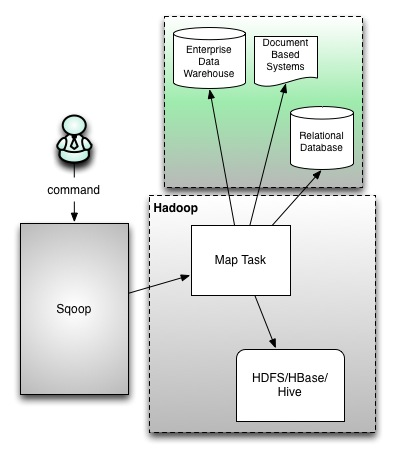
1 | 版本号为1.4.x0 |
- ==sqoop2的架构图==

1 | 版本号为1.99x为sqoop2 |

4. Sqoop安装部署
点击查看
5. Sqooq数据的导入
- 导入单个表从RDBMS到HDFS。表中的每一行被视为HDFS的记录。所有记录都存储为文本文件的文本数据（或者Avro、sequence文件等二进制数据）
5.1 列举出所有的数据库
- 命令行查看帮助文档
1 | sqoop list-databases --help |
- 列出node03上mysql数据库中所有的数据库名称
1 | sqoop list-databases --connect jdbc:mysql://node03:3306/ --username root --password 123456 |
- 查看某一个数据库下面的所有数据表
1 | sqoop list-tables --connect jdbc:mysql://node03:3306/hive --username root --password 123456 |
5.2 导入数据库表数据到HDFS
在MySQL数据库服务器中创建一个数据库userdb, 然后在创建一张表 emp，添加点测试数据到表中
从MySQL数据库服务器中的userdb数据库下的emp表导入HDFS上
1 | sqoop import \ |
- 提交之后，会运行一个MR程序，最后查看HDFS上的目录看是否有数据生成
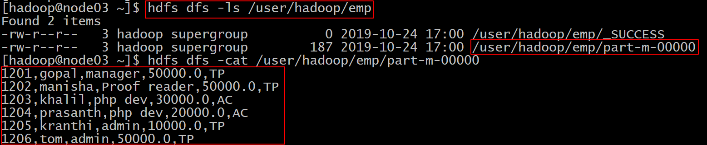
5.3 导入数据库表数据到HDFS指定目录
- 在导入表数据到HDFS使用Sqoop导入工具，我们可以指定目标目录。
- 使用参数 ==–target-dir==来指定导出目的地，
- 使用参数==–delete-target-dir==来判断导出目录是否存在，如果存在就删掉
1 | sqoop import --connect jdbc:mysql://node03:3306/userdb --username root --password 123456 --table emp --target-dir /sqoop/emp --delete-target-dir --m 1 |
- 提交查看HDFS上的目录看是否有数据生成
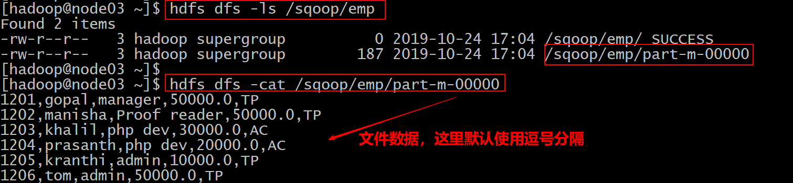
5.4 导入数据库表数据到HDFS指定目录并且指定数据字段的分隔符
- 这里使用参数
- ==–fields-terminated-by 分隔符==
1 | sqoop import \ |
5.5 导入关系表到Hive中
- (1) 将我们mysql表当中的数据直接导入到hive表中的话，需要将hive的一个叫做==hive-exec-1.1.0-cdh5.14.2.jar==包拷贝到sqoop的lib目录下
1 | cp /kkb/install/hive-1.1.0-cdh5.14.2/lib/hive-exec-1.1.0-cdh5.14.2.jar /kkb/install/sqoop-1.4.6-cdh5.14.2/lib/ |
(2) 准备hive数据库与表
- 在hive中创建一个数据库和表
1
2
3create database sqooptohive;
create external table sqooptohive.emp_hive(id int,name string,deg string,salary double ,dept string) row format delimited fields terminated by '\001';(3) 把mysql表数据导入到hive表中
1 | sqoop import \ |
分为两步
- (4) 执行完成了查看hive中表的数据
- select * from sqooptohive.emp_hive;
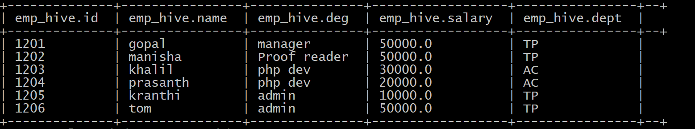
5.6 导入数据库表数据到hive中(并自动创建hive表)
- 可以通过命令来将我们的mysql的表直接导入到hive表当中去，==不需要事先创建hive表==
1 | sqoop import \ |
- 执行完成了查看hive中表的数据
- select * from sqooptohive.emp1;
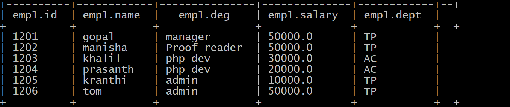
5.7 导入表数据子集
- 我们可以导入表的使用Sqoop导入工具，”where”子句的一个子集。它执行在各自的数据库服务器相应的SQL查询，并将结果存储在HDFS的目标目录。
- 按照条件进行查找，通过==–where==参数来查找表emp当中==dept==字段的值为 ==TP== 的所有数据导入到hdfs上面去
1 | sqoop import \ |
提交查看HDFS上的目录看是否有数据生成
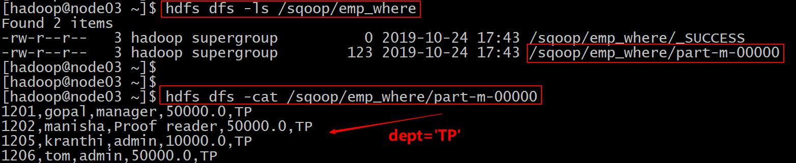
5.8 sql语句查找导入hdfs
- 我们还可以通过 -–query参数来指定我们的sql语句，通过sql语句来过滤我们的数据进行导入
1 | sqoop import \ |
- 提交查看HDFS上的目录看是否有数据生成
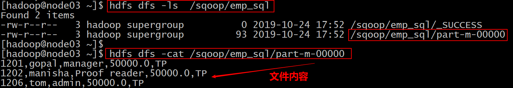
==补充：==
1
2
3
4
5
6
7
8
9
10
11
12
13
14
15
16
17
18
19
20
21
22
23
24
25
26
27
28
29
30
31
32
33
34
35
36
37
38
39CONTITONS是linux系统的变量，如果你想通过并行的方式导入结果，每个map task需要执行sql查询后脚语句的副本，结果会根据sqoop推测的边界条件分区。query必须包含$CONDITIONS。这样每个sqoop程序都会被替换为一个独立的条件。同时你必须指定 --split-by '字段'，后期是按照字段进行数据划分，最后可以达到多个MapTask并行运行。
sqoop import \
--connect jdbc:mysql://node03:3306/userdb \
--username root \
--password 123456 \
--target-dir /sqoop/emp_sql_2 \
--delete-target-dir \
--query 'select * from emp where salary >30000 and $CONDITIONS' \
--split-by 'id' \
--m 2
sqoop import \
--connect jdbc:mysql://node03:3306/userdb \
--username root \
--password 123456 \
--target-dir /sqoop/emp_sql_2 \
--delete-target-dir \
--query 'select * from emp where id >1 and $CONDITIONS' \
--split-by 'salary' \
--m 2
sqoop import \
--connect jdbc:mysql://node03:3306/userdb \
--username root \
--password 123456 \
--target-dir /sqoop/emp_sql_2 \
--delete-target-dir \
--query 'select * from emp where id >1 and $CONDITIONS' \
--split-by 'id' \
--m 7
--split-by '字段'： 后期按照字段进行数据划分实现并行运行多个MapTask。
5.9 增量导入
在实际工作当中，数据的导入很多时候都是==只需要导入增量数据即可==，并不需要将表中的数据全部导入到hive或者hdfs当中去，肯定会出现重复的数据的状况，所以我们一般都是选用一些字段进行增量的导入，为了支持增量的导入，sqoop也给我们考虑到了这种情况并且支持增量的导入数据
增量导入是仅导入新添加的表中的行的技术。
它需要添加 ==‘incremental’, ‘check-column’, 和 ‘last-value’==选项来执行增量导入。
1
2
3--incremental <mode>
--check-column <column name>
--last value <last check column value>==第一种增量导入实现==
- ==基于递增列的增量数据导入（Append方式）==
- 导入emp表当中id大于1202的所有数据
- 注意：==这里不能加上 –delete-target-dir 参数，添加就报错==
1
2
3
4
5
6
7
8
9
10
11
12
13
14
15
16
17sqoop import \
--connect jdbc:mysql://node03:3306/userdb \
--username root \
--password 123456 \
--table emp \
--incremental append \
--check-column id \
--last-value 1202 \
--target-dir /sqoop/increment \
--m 1
#参数解释
--incremental 这里使用基于递增列的增量数据导入
--check-column 递增列字段
--last-value 指定上一次导入中检查列指定字段最大值
--target-dir 数据导入的目录- 提交查看HDFS上的目录看是否有数据生成
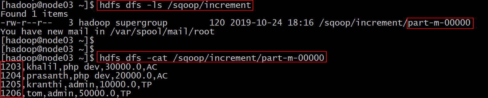
==第二种增量导入实现==
==基于时间列的增量数据导入（LastModified方式）==
- 此方式要求原有表中有time字段，它能指定一个时间戳
- user表结构和数据
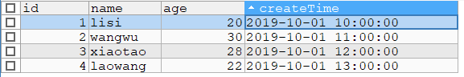
- 此方式要求原有表中有time字段，它能指定一个时间戳
1
2
3
4
5
6
7
8
9
10
11
12
13
14
15
16
17
18
19
20sqoop import \
--connect jdbc:mysql://node03:3306/userdb \
--username root \
--password 123456 \
--table user \
--incremental lastmodified \
--check-column createTime \
--last-value '2019-10-01 10:30:00' \
--target-dir /sqoop/increment2 \
--m 1
#参数解释
--incremental 这里使用基于时间列的增量导入
--check-column 时间字段
--last-value 指定上一次导入中检查列指定字段最大值
--target-dir 数据导入的目录
如果该目录存在(可能已经有数据)
再使用的时候需要添加 --merge-key or --append
--merge-key 指定合并key（对于有修改的）
--append 直接追加修改的数据- 提交查看HDFS上的目录看是否有数据生成
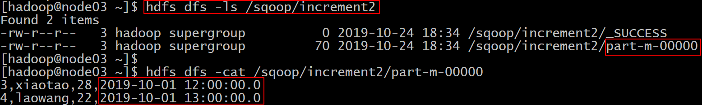
5.10 mysql表的数据导入到hbase中
- 实现把一张mysql表数据导入到hbase中
1 | sqoop import \ |
6. Sqoop数据的导出
- 将数据从HDFS把文件导出到RDBMS数据库
- 导出前，目标表必须存在于目标数据库中。
- 默认操作是从将文件中的数据使用INSERT语句插入到表中
- 更新模式下，是生成UPDATE语句更新表数据
- 导出前，目标表必须存在于目标数据库中。
6.1 hdfs文件导出到mysql表中
- 1、数据是在HDFS当中的如下目录/user/hive/warehouse/hive_source，数据内容如下
1 | 1 zhangsan 20 hubei |
- 2、创建一张mysql表
- 注意mysql中的这个表一定要先创建！ 不然报错！
1 | CREATE TABLE userdb.fromhdfs ( |
- 3、执行导出命令
1 | sqoop export \ |
- 4、验证mysql表数据
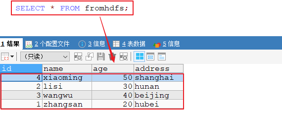
7. Sqoop job
将事先定义好的数据导入导出任务按照指定流程运行
语法
1 | sqoop job (generic-args) (job-args) |
7.1 创建job
- ==–create==
- 创建一个名为myjob,实现从mysql表数据导入到hdfs上的作业
- 注意
- 在创建job时，==命令”– import” 中间有个空格==
- 注意
- 创建一个名为myjob,实现从mysql表数据导入到hdfs上的作业
1 | sqoop job --help |
7.2 验证 job
==–list==
验证作业是否创建成功
- 执行如下命令
1
2
3
4
5
6sqoop job --list
最后显示：
Available jobs:
myjob
7.3 查看job
- ==–show==
- 查看作业的详细信息
- 执行如下命令
1 | sqoop job --show myjob1 |
7.4 执行job
==–exec==
- 用于执行保存的作业
1
sqoop job --exec myjob1
- 解决sqoop需要输入密码的问题
- 修改配置文件
- vi /kkb/install/sqoop-1.4.6-cdh5.14.2/conf/sqoop-site.xml
- 修改配置文件
1
2
3
4
5
6<property>
<name>sqoop.metastore.client.record.password</name>
<value>true</value>
<description>If true, allow saved passwords in the metastore.
</description>
</property>
7.5 删除job
- ==–delete==
- 用于删除保存作业
1 | sqoop job --delete myjob |